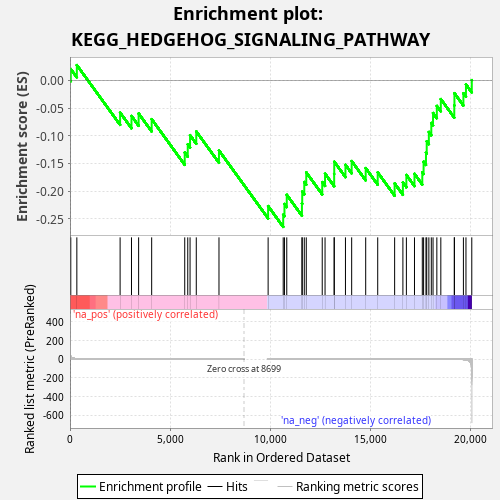
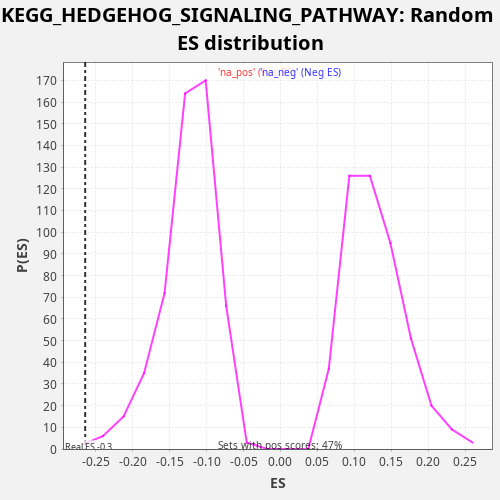

| Dataset | rnk |
| Phenotype | NoPhenotypeAvailable |
| Upregulated in class | na_neg |
| GeneSet | KEGG_HEDGEHOG_SIGNALING_PATHWAY |
| Enrichment Score (ES) | -0.26438224 |
| Normalized Enrichment Score (NES) | -2.1321204 |
| Nominal p-value | 0.0037523452 |
| FDR q-value | 0.035112202 |
| FWER p-Value | 0.179 |

| SYMBOL | RANK IN GENE LIST | RANK METRIC SCORE | RUNNING ES | CORE ENRICHMENT | |
|---|---|---|---|---|---|
| 1 | LRP2 | 39 | 30.390 | 0.0203 | No |
| 2 | PRKACB | 342 | 4.714 | 0.0274 | No |
| 3 | WNT6 | 2505 | 0.169 | -0.0582 | No |
| 4 | PRKX | 3074 | 0.106 | -0.0643 | No |
| 5 | GAS1 | 3431 | 0.078 | -0.0598 | No |
| 6 | BMP4 | 4083 | 0.047 | -0.0701 | No |
| 7 | WNT4 | 5736 | 0.011 | -0.1302 | No |
| 8 | WNT5A | 5887 | 0.010 | -0.1155 | No |
| 9 | RAB23 | 6002 | 0.009 | -0.0990 | No |
| 10 | WNT7B | 6313 | 0.007 | -0.0922 | No |
| 11 | WNT11 | 7448 | 0.001 | -0.1265 | No |
| 12 | CSNK1D | 9905 | -0.000 | -0.2268 | No |
| 13 | ZIC2 | 10659 | -0.001 | -0.2422 | Yes |
| 14 | BMP5 | 10722 | -0.001 | -0.2230 | Yes |
| 15 | WNT2B | 10837 | -0.001 | -0.2065 | Yes |
| 16 | WNT3 | 11596 | -0.003 | -0.2221 | Yes |
| 17 | HHIP | 11610 | -0.003 | -0.2005 | Yes |
| 18 | BMP7 | 11713 | -0.003 | -0.1834 | Yes |
| 19 | WNT10A | 11812 | -0.004 | -0.1660 | Yes |
| 20 | GLI1 | 12610 | -0.008 | -0.1836 | Yes |
| 21 | CSNK1G3 | 12751 | -0.009 | -0.1683 | Yes |
| 22 | PRKACA | 13207 | -0.013 | -0.1688 | Yes |
| 23 | GSK3B | 13211 | -0.013 | -0.1467 | Yes |
| 24 | CSNK1G2 | 13771 | -0.020 | -0.1524 | Yes |
| 25 | BTRC | 14082 | -0.025 | -0.1456 | Yes |
| 26 | SUFU | 14783 | -0.039 | -0.1583 | Yes |
| 27 | BMP8B | 15384 | -0.058 | -0.1660 | Yes |
| 28 | PTCH1 | 16230 | -0.098 | -0.1859 | Yes |
| 29 | WNT10B | 16643 | -0.130 | -0.1843 | Yes |
| 30 | WNT5B | 16817 | -0.146 | -0.1707 | Yes |
| 31 | SHH | 17222 | -0.193 | -0.1686 | Yes |
| 32 | CSNK1G1 | 17613 | -0.263 | -0.1658 | Yes |
| 33 | GLI2 | 17678 | -0.278 | -0.1468 | Yes |
| 34 | FBXW11 | 17797 | -0.303 | -0.1305 | Yes |
| 35 | WNT9A | 17834 | -0.309 | -0.1100 | Yes |
| 36 | PTCH2 | 17941 | -0.336 | -0.0931 | Yes |
| 37 | BMP2 | 18063 | -0.373 | -0.0769 | Yes |
| 38 | STK36 | 18150 | -0.407 | -0.0590 | Yes |
| 39 | CSNK1A1 | 18340 | -0.482 | -0.0462 | Yes |
| 40 | BMP6 | 18539 | -0.582 | -0.0339 | Yes |
| 41 | CSNK1E | 19212 | -1.395 | -0.0451 | Yes |
| 42 | WNT16 | 19220 | -1.414 | -0.0233 | Yes |
| 43 | GLI3 | 19668 | -4.476 | -0.0233 | Yes |
| 44 | WNT7A | 19796 | -7.069 | -0.0075 | Yes |
| 45 | SMO | 20087 | -192.742 | 0.0003 | Yes |

{kind=link}
{kind=link}